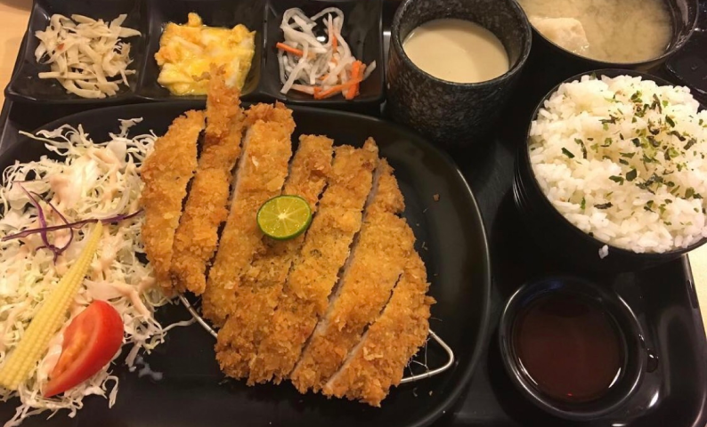
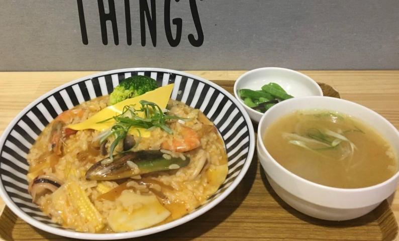
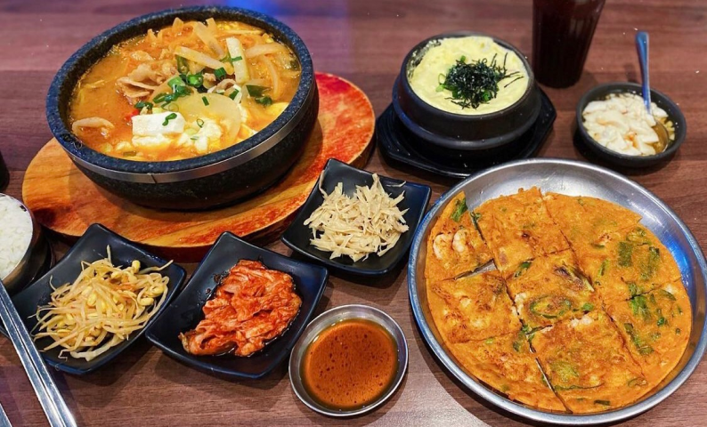
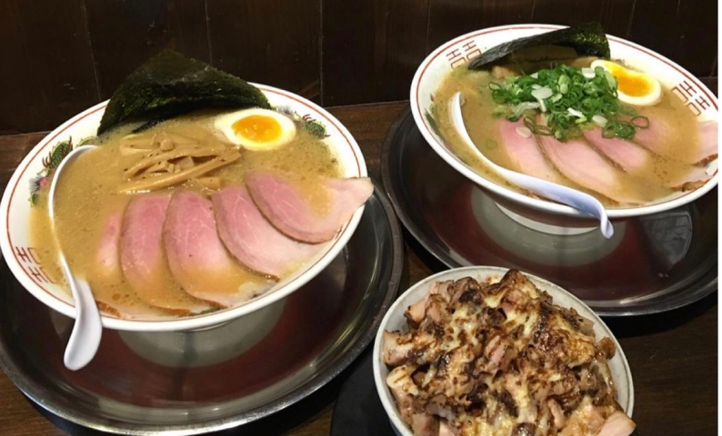
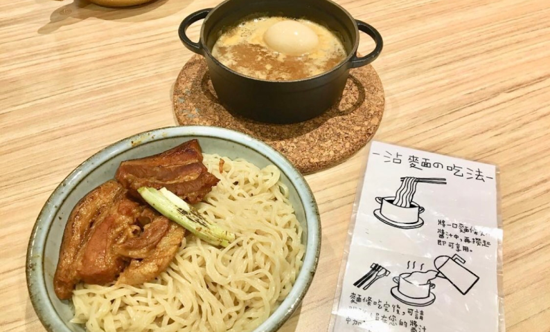
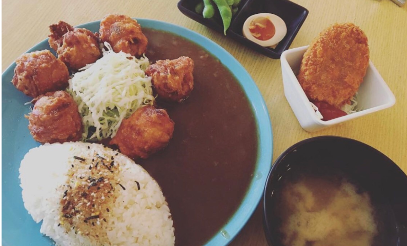

日韓式專區

愛吃日式定食的人，絕對不要錯過才川！
分量超級多，午餐吃才川晚餐就可以不用吃了XD
👉日式炸豬排$150
除了炸的外酥內軟又厚實的豬排（豬排醬也是波波熱愛的那種口味），
定食都有左下的小沙拉、三種小菜、茶碗蒸、味噌湯，白飯還會撒上一點日式香鬆
內用還有麥茶可以喝（有冷的也有熱的）
👉蒲燒鯛魚$150
才川的蒲燒鯛魚也是很大一片，醬汁很入味卻不死鹹，非常下飯！
.
店面說大不大說小不小，建議也是一開店就去，點餐完也要等廚房現做，會花一些時間~
2017.10.01（第一次吃的時間）
分量超級多，午餐吃才川晚餐就可以不用吃了XD
👉日式炸豬排$150
除了炸的外酥內軟又厚實的豬排（豬排醬也是波波熱愛的那種口味），
定食都有左下的小沙拉、三種小菜、茶碗蒸、味噌湯，白飯還會撒上一點日式香鬆
內用還有麥茶可以喝（有冷的也有熱的）
👉蒲燒鯛魚$150
才川的蒲燒鯛魚也是很大一片，醬汁很入味卻不死鹹，非常下飯！
.
店面說大不大說小不小，建議也是一開店就去，點餐完也要等廚房現做，會花一些時間~
2017.10.01（第一次吃的時間）
才川
營業時間：11:00-14:00 / 17:00-21:00公 休 日：週三
電 話：(06)252-1745
地 址：704台南市北區公園北路112號

算是波波在台南讀書時的私房愛店❤️
店小小的，人也少少的，怕他倒了，所以波波一直推薦給親朋好友！
波波來用餐不下10次了，這邊絕對是一個人想好好吃飯的最佳首選~
店內也有一張四人桌供三五好友一起用餐的選擇
👉海鮮起司燒飯$180 附韓國大醬湯！
用料太豪邁ಠ_ಠ有一整隻小章魚跟巨大蛤蜊
👉泡菜辣炒豬飯$150 附韓國大醬湯！
全部喇在一起就是人間美味
👉不定時出現的炸雞軟骨$50 這個爆好吃，有出現一定要點爆
👉辛拉麵部隊鍋$150
好像相較起來比較普通，但我覺得還是不錯吃
.
整間店全部都是一個人在弄的，如果你衰選錯時間去可能要等很久，我是都沒什麼等過啦😎
2018.6.29
店小小的，人也少少的，怕他倒了，所以波波一直推薦給親朋好友！
波波來用餐不下10次了，這邊絕對是一個人想好好吃飯的最佳首選~
店內也有一張四人桌供三五好友一起用餐的選擇
👉海鮮起司燒飯$180 附韓國大醬湯！
用料太豪邁ಠ_ಠ有一整隻小章魚跟巨大蛤蜊
👉泡菜辣炒豬飯$150 附韓國大醬湯！
全部喇在一起就是人間美味
👉不定時出現的炸雞軟骨$50 這個爆好吃，有出現一定要點爆
👉辛拉麵部隊鍋$150
好像相較起來比較普通，但我覺得還是不錯吃
.
整間店全部都是一個人在弄的，如果你衰選錯時間去可能要等很久，我是都沒什麼等過啦😎
2018.6.29
曖含光
營業時間：11:30-14:00 / 17:00-21:00公 休 日：X
電 話：0979-845-979
地 址：701台南市東區前鋒路32號

一個人也可以來吃的平價韓式料理店！多人來可以點多樣來share著吃
會依照人數給小菜的份數，小菜的種類是隨機的，續小菜要加錢呦~
👉泡菜海鮮豆腐煲$180 可以選擇豬或牛
冷冷的冬天裡來上一碗泡菜豆腐鍋，實在是幸福到不行，你說台南四季如夏？沒關係！店裡的冷氣也夠強讓你不留一滴汗的吃完鍋！
👉海鮮煎餅$120
👉辣味韓式炸雞$150
他的辣是平常不敢吃辣的人會覺得不行的辣~各位要慎選~
但炸雞本人真的很好吃很過癮，不像正統的韓式炸雞，卻是符合台灣人口味的好吃調味炸雞！
👉海鮮烘蛋$100
.
偷偷跟大家說，大韓名鍋很常在辦活動，波波就抽中過一份韓式炸雞，吃得超滿足呀！
會依照人數給小菜的份數，小菜的種類是隨機的，續小菜要加錢呦~
👉泡菜海鮮豆腐煲$180 可以選擇豬或牛
冷冷的冬天裡來上一碗泡菜豆腐鍋，實在是幸福到不行，你說台南四季如夏？沒關係！店裡的冷氣也夠強讓你不留一滴汗的吃完鍋！
👉海鮮煎餅$120
👉辣味韓式炸雞$150
他的辣是平常不敢吃辣的人會覺得不行的辣~各位要慎選~
但炸雞本人真的很好吃很過癮，不像正統的韓式炸雞，卻是符合台灣人口味的好吃調味炸雞！
👉海鮮烘蛋$100
.
偷偷跟大家說，大韓名鍋很常在辦活動，波波就抽中過一份韓式炸雞，吃得超滿足呀！
大韓名鍋
營業時間：11:30-14:30 / 17:30-21:00公 休 日：X
電 話：(06)209-3581
地 址：701台南市東區東安路298號

受拉麵愛好者極力推薦的一家🤤據說本體是只能加點的叉燒飯！
11:30開門，我們11:20左右到完全沒排隊就進去了🤪
👉左右都是3號濃厚中華soba，我的去蔥ㄎㄎ
裡面的叉燒好嫩入口即化💯麵條有嚼勁蠻吸附湯汁的！
本身愛吃筍乾但他有點太多了哈哈哈
👉再來是叉燒飯（一樣去蔥
他的炙燒聞起來跟吃起來都很香噢我真的好愛那個味道
但整體好鹹😂一定要配飯
.
只要有人進出店所有店員都感覺是用盡全力喊口號，講話都聽不到自己的聲音😅😅😅
2019.6.24
11:30開門，我們11:20左右到完全沒排隊就進去了🤪
👉左右都是3號濃厚中華soba，我的去蔥ㄎㄎ
裡面的叉燒好嫩入口即化💯麵條有嚼勁蠻吸附湯汁的！
本身愛吃筍乾但他有點太多了哈哈哈
👉再來是叉燒飯（一樣去蔥
他的炙燒聞起來跟吃起來都很香噢我真的好愛那個味道
但整體好鹹😂一定要配飯
.
只要有人進出店所有店員都感覺是用盡全力喊口號，講話都聽不到自己的聲音😅😅😅
2019.6.24
中華寶來軒
營業時間：11:30-14:00 / 17:30-20:00公 休 日：X
電 話：0989-294-439
地 址：704台南市北區公園南路206號

第一次吃熱的沾麵🤤意外的合我的口味！💯
沾麵分成原味、咖哩、赤辛三種口味，每個口味都有牛豬雞的主餐肉可以選
查唉居有人評味道很淡，但我覺得加高湯前偏重口味
黑色小鍋子裡就是放賀騰騰的沾醬+溏心蛋，
肉會在上桌前炙燒逼出油紙跟香氣
麵因為不是放在熱湯裡，用沾著吃我覺得更Q更有嚼勁
最後還可以加高湯在鍋子裡算是兩吃
.
整間店是日式老宅風格，座位很少要到齊才能入座～
巷子往前騎一點有免費的機車停車場可以停
2019.3.13
沾麵分成原味、咖哩、赤辛三種口味，每個口味都有牛豬雞的主餐肉可以選
查唉居有人評味道很淡，但我覺得加高湯前偏重口味
黑色小鍋子裡就是放賀騰騰的沾醬+溏心蛋，
肉會在上桌前炙燒逼出油紙跟香氣
麵因為不是放在熱湯裡，用沾著吃我覺得更Q更有嚼勁
最後還可以加高湯在鍋子裡算是兩吃
.
整間店是日式老宅風格，座位很少要到齊才能入座～
巷子往前騎一點有免費的機車停車場可以停
2019.3.13
Nani麵
營業時間：11:00-15:00 / 16:30-20:00公 休 日：X
電 話：(06)222-8030
地 址：700台南市中西區新美街163號

據說是台南最強的唐揚炸雞
肉真的很嫩很juicy名副其實啊❗️❗️❗️
但可以不用加咖哩，咖哩真的普通
高麗菜絲都會加美乃滋我不喜歡😂可以提前跟店家說
加點了一個可樂餅肚子快破了，
唐揚雞真的蠻好吃的但有點太遠了，順路經過的話很推薦~
.
從市區騎過來大概半小時內可以到（不迷路的話）
店面我覺得很不起眼，來回繞了好久才發現XD
2018.1.18
肉真的很嫩很juicy名副其實啊❗️❗️❗️
但可以不用加咖哩，咖哩真的普通
高麗菜絲都會加美乃滋我不喜歡😂可以提前跟店家說
加點了一個可樂餅肚子快破了，
唐揚雞真的蠻好吃的但有點太遠了，順路經過的話很推薦~
.
從市區騎過來大概半小時內可以到（不迷路的話）
店面我覺得很不起眼，來回繞了好久才發現XD
2018.1.18
魚小璐
營業時間：11:30-14:00 / 17:00-21:00公 休 日：週一
電 話：(06)303-5859
地 址：710台南市永康區東橋十街70號